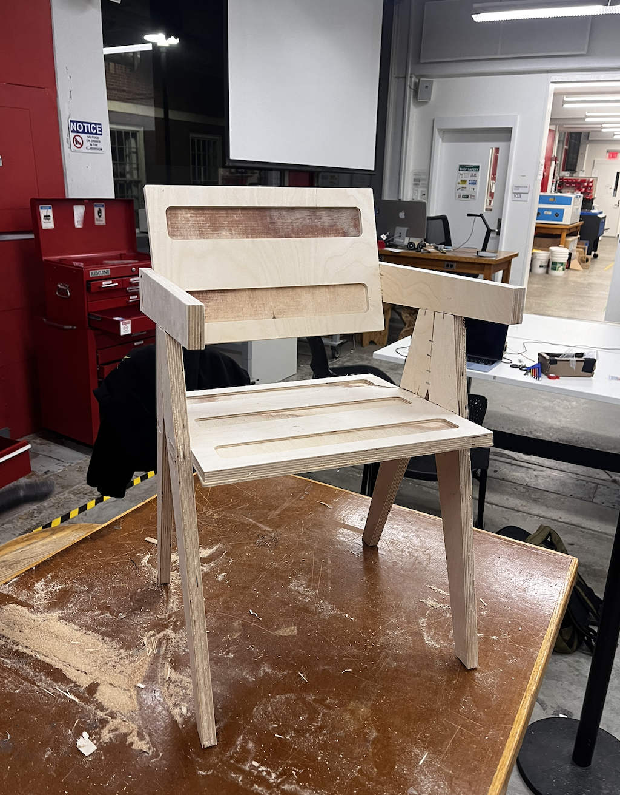
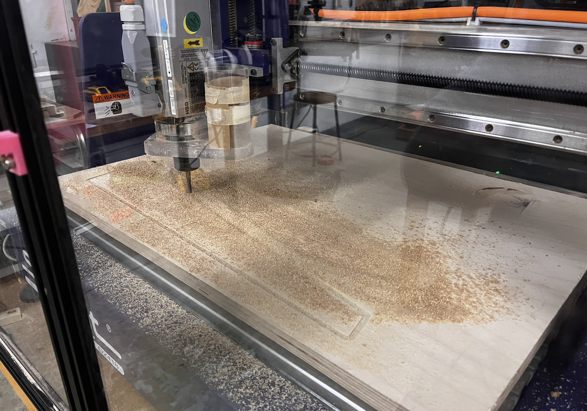
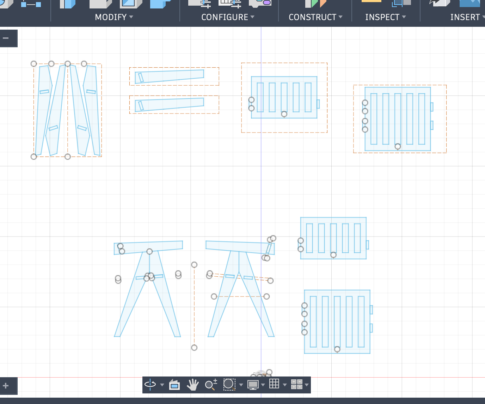

Design and fabricate something using one of the CNC machines in the lab. Make sure to include some kind of post processing in your design.



We made a full sized usable chair out of plywood. It is mostly assembled using joints that were integrated into the individual pieces as part of the design. We did run into difficulties when operating the CNC machine due to faulty calibration and actual measurements of the wood. The CNC machine in the lab didn't fit the original dimensions we designed for the chair and we had to scale the design down to 80%. Overall, I think the final product turned out pretty nice, we added staples to the hinges and sides for further stablity because the joints did not fit perfectly. I enjoyed my experience working in a group and completing this larger product as part of the assignment even though it took more time then we planned.